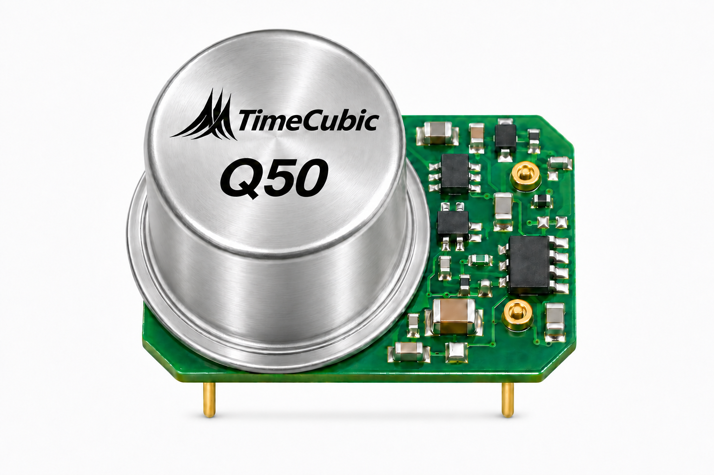
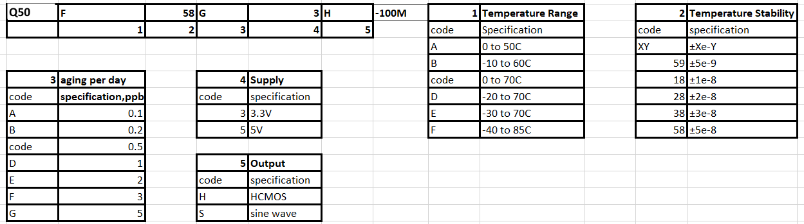
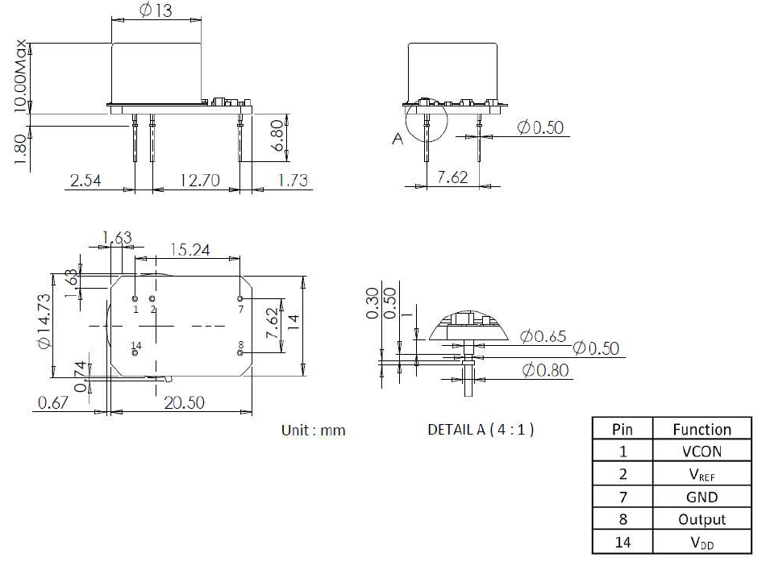

Mechanical Outline & Dimensions

Standard footprint for direct PCB integration • Through-hole pins
Measured Frequency Stability Plot

Frequency Drift vs. Ambient Seabed Temperature
100 MHz Phase Noise Spectrum
Q50-100M
Keysight E5052B Measurement • Noise Floor: -176.5 dBc/Hz
Key Performance Features
✓
Low Power OCXO (<60 mW) for OBN
Unlocks unprecedented multi-month seabed Ocean Bottom Node (OBN) deployments on standard battery packs.
✓
Low Phase Noise & Low Jitter
Optimized low-noise oscillator circuit (-165 dBc/Hz floor) with sub-picosecond low jitter for acoustic telemetry and direct-RF sampling.
✓
Low G-Sensitivity Oscillator (Q52 Option)
Ruggedized ±0.3 ppb/g low g-sensitivity oscillator option for high-vibration mobile and dynamic environments.
✓
High Precision Aging Grade
High precision pre-aged SC-cut crystal blanks for superior long-term holdover stability (±0.2 ppb/day).
Technical Specifications
| Supply Voltage | +3.3V DC (±5%) |
| Power Consumption | <60 mW typ. steady-state (55 mW typ. @ 25°C, <65 mW max.) |
| Output Frequencies | 10.000 MHz / 16.384 MHz / 100.000 MHz |
| Output Signal Type | HCMOS, 15 pF load |
| Operating Temperature | -10°C to +60°C (Seabed Optimized 0°C to +25°C) |
| Applications | Ocean Bottom Nodes (OBN), Seismic Research, Mining, Smart Power |
Pinout & Terminal Configuration
| Pin # | Signal | Type | Description |
|---|---|---|---|
| 1 | VCON | Input | Analog frequency control voltage (0 to +2.8V DC; leave open if unused) |
| 2 | VREF | Output | Internal regulated reference voltage (+2.8V DC output) |
| 3 | VDD | Power | +3.3V DC (or +5.0V optional) power input |
| 4 | RF_OUT | Output | Precision HCMOS clock output (10 MHz, 16.384 MHz, or 100 MHz) |
| 5 | GND | Power | Ground and metal case shield connection |
Model Q50 Engineering FAQ
How does Model Q50 achieve sub-60 mW power consumption? ↓
Model Q50 utilizes TimeCubic's patented micro-oven thermal vacuum isolation chamber that minimizes thermal dissipation paths. By reducing the effective thermal volume, steady-state power is held to 55 mW at 16.384 MHz and 150 mW at 10 MHz, cutting power by over 80% compared to standard OCXOs.
What battery life extension does Model Q50 offer for seabed nodes? ↓
In deep subsea ocean bottom nodes (OBN), Model Q50 allows deployments exceeding 60 to 120 days on compact lithium cell arrays. This eliminates the multi-thousand-dollar cost premium and procurement lead time of atomic CSAC clocks while delivering superior phase noise.
What is the function of the VCON control pin? ↓
Pin 1 (VCON) provides an analog voltage tuning input (0 to +2.8V DC) allowing electronic frequency adjustments. If external electronic steering is not required, Pin 1 may be left disconnected for autonomous free-running operation.
Require Custom Frequencies for Q50?
We supply custom frequencies, pin configurations, and screening test reports.